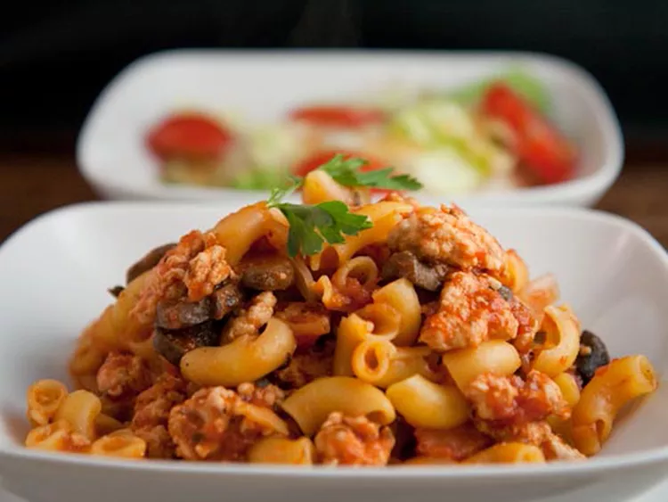

Turkey Goulash recipe

Description
A lighter version of the classic goulash.
Serve with a salad for a quick and healthful meal.
Ingredients
- 1 pound lean ground turkey
- 1 (14 ounce) can stewed, diced tomatoes
- 3 cloves garlic, minced
- 1 cup tomato sauce
- 2 teaspoons white sugar
- ½ teaspoon dried basli
- 1 (16 ounce) package bow tie pasta
Directions
- In a large skillet over medium heat, cook the turkey until browned.
- Stir in the stewed tomatoes, garlic, tomato sauce, sugar and basil, and then simmer for about 20 minutes.
- Bring a large pot of lightly salted water to a boil. Add pasta and cook for 8 to 10 minutes or until al dente, and then drain. Combine the pasta and turkey mixture; toss and serve.